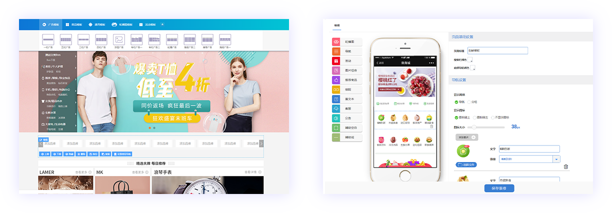

.png)
.png)
商联达B2B2C多用户商城系统是主要面向中高端企业级客户，打造支持自营+招商入驻经营模式的电商平台（类似京东、天猫的经营模式），创新模块化设计整
合运营商，城市站点，供货商，批发商，入驻商，分销商，门店于一体，各个模块可自由拆分组合，可以让商家在这个电商多样化的时代下随时调整运营方案
一套系统想变就变
.png)
源码
.png)
支持定制开发
.png)
支持多语言
.png)
支持SAAS及独立部署
.png)
支持集群架构
商联达多用户商城利用最新技术，完美打通各渠道，实现全终端数据同步，达到全网营销的效果，并将所有管理统一于一个管理平台
.png)
商联达多用户商城系统无论前台的可视化自定义装修还是后台的功能架构都是使用最新技术开发
.png)
平台运营
.png)
入驻商家
.png)
门店
.png)
会员
.png)
促销
.png)
外接式系统
.png)

管理商城平台整体运营，信息设置，数据报表分析
每个入驻商家都有自己独立的管理后台
拥有线下门店的商家可以添加门店及网点
会员支持注册及互联登陆,可设置不同会员不同的等级折扣
.png)
强大的促销模块让商家商品不愁卖
可与周边系统无缝对接
商联达多用户商城系统采用先进的可视化模板设计方式，让首页、导航、楼层、广告位、专题、商家店铺以及移动端可以根据自己网站的需求随意变动装修；系统自带多套首页模板，为运营者个性化设计自己的商城提供了更多的选择。
商联达多用户商城系统支持时下爆火的短视频直播功能，视频播放的同时，商家可自行添加视频中需要关联的商品，关联后将在前端页面进行展示，消费者在观看视频的同时可以将喜欢的商品加入购物车。
.jpg)
全面了解商城经营数据，消费者行为数据，用于调整策略参考，更有实时交易数据监控，帮助你快速发现数据之间的联系及背后的价值，全面分析， 让你轻松把握商业趋势，及时应对变化。

实时概况主要统计商城的实时销售额、销售单数、下单买家数、实时浏览量、PC/移动各自占比以及实时数据与昨天数据的对比等，方便运营方实时监控商城数据监控，做出经营决策。

核心指标主要是统计商城的各项核心数据，例如：各终端销售额、访客数、订单数、支付买家数、浏览量、商品访问量、商品销售排行、交易转化率、终端构成等各项数据。
流量分析主要是统计商城各终端的流量访问及变化情况，例如：浏览量、人均浏览量、新老访客数、店铺/商品访问量、转化量等数据的变化情况。
商品分析主要是统计商城各终端的商品各项数据变化情况，例如：商品的平均停留时长、人均浏览量、商品收藏数、加购物车数、购买数、购买转化率、销售额/浏览量排行榜等数据。

交易构成主要是统计商城各终端的新老访客交易变化情况，例如：新老访客数变化量、客单价及变化量、转化率及变化量、支付金额及变化量等数据。

地域分析主要是统计商城各终端的分地域访客数及下单转化情况，例如：分地域访客占比排行榜、分地域下单买家排行榜、分地域下单转化率等数据。
渠道来源主要是统计商城各终端的流量来源渠道情况，例如访客是通过搜索引擎推广过来的或者是通过其它方式过来的都可做一个唯一的标记，并分别统计各渠道来源的客户的浏览情况及转化情况等。
终端构成主要是统计商城流量及成交等的来源终端，例如：商城商品的PC浏览及购买情况、手机浏览及购买情况、PC和手机的各自转化率等情况。
马上开启自己的电商之路